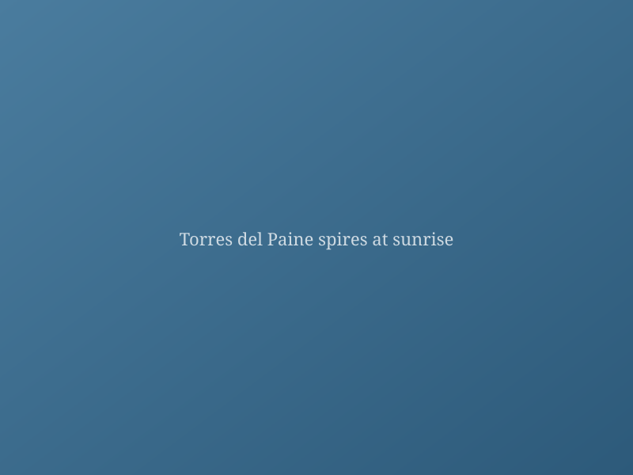
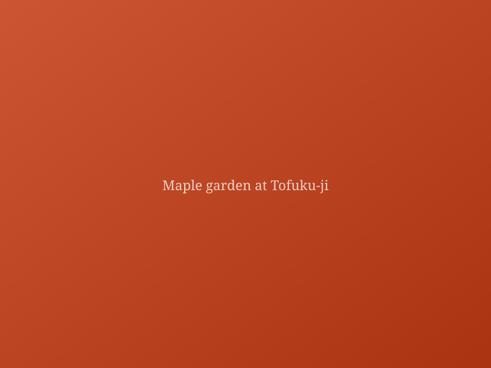
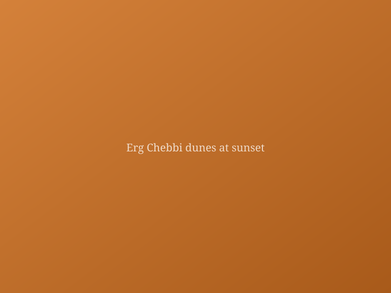

DPhil student at the University of Oxford, researching AI for the environment. MSci in Quantitative Climate and Environmental Sciences from the University of Cambridge. BA in Natural Sciences (Chemistry) from the University of Cambridge. Outside work, I travel with a camera.

Patagonia: At the End of the World
Trekking through the dramatic landscapes of southern Patagonia — wind-battered plains, turquoise glacial lakes, and the iconic granite spires.

Autumn Colours in Rural Japan
Chasing koyo — the Japanese autumn colour season — through ancient temple gardens and forested mountain roads.

Into the Sahara
A camel trek into the Erg Chebbi dunes, sleeping under an impossible sky of stars on the edge of the Sahara.
Towards Interpretable Climate Models: Sparse Autoencoders for Disentangling Atmospheric Circulation Patterns
Journal of Climate, 2024
Scaling Laws for Data-Driven Weather Prediction at Kilometre Resolution
NeurIPS Workshop on Tackling Climate Change with Machine Learning, 2023